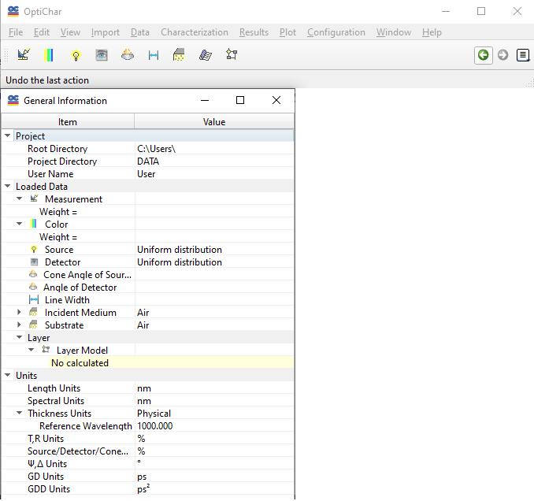

Quick Start
This section serves as a quick guide to getting started with OptiChar software effectively.
- 1. Online Help System:
The integrated online help system is a comprehensive resource that covers a variety of topics pertaining to OptiChar. It is particularly useful for undehtmlanding the user interface features and available methods, as well as for troubleshooting design and analysis problems.
- 2. Navigating the Help System:
Table of Contents:
To view the overall structure of the help documentation, select the Contents item from the Help menu. This will provide you with a structured outline to easily navigate through the topics.
Index and Search:
For specific information, click on the Index or Search tab. Enter your topic of interest to quickly locate relevant information.
3. Context-Sensitive Help:
For immediate assistance related to any item within the OptiChar application, such as menu items, dialog boxes, or toolbars, simply select the item and press the F1 key. This will bring up context-sensitive help that directly addresses your current focus.

The OptiLayer installer has conveniently placed an icon on your desktop, as well as added an OptiChar item to the Windows Start menu under the OptiLayer group. You can use either of these options to launch OptiChar.
Note: You can launch multiple instances of OptiChar. If you start a new instance while others are running, the existing instances will be minimized but may continue processing computations. When opening a new instance, you will be prompted to select a Problem Directory. Ensure that this directory is different from any already opened instances.
Upon launching OptiChar, you will be greeted by the following windows:
OptiChar Main Window: This is the central interface where you can access all functionalities.
General Information Window: Provides helpful details about the software and your current session.
A menu system for organizing different functionalities.
A toolbar with buttons to control various operations within the application.
In OptiChar, you may encounter instances where certain menu items and toolbar buttons appear grayed out (disabled). This typically indicates that specific operations are not available due to missing data or other factors. When the necessary conditions are met, the corresponding controls will automatically become enabled.
The General Information Window is crucial for monitoring and managing the current state of OptiChar. It presents essential details about the OptiChar environment in a structured, hierarchical format. You can use this window not only for information but also for control purposes:
Right-Click Pop-Up Menu: By selecting an item and right-clicking, you access a popup menu that contains commands commonly used for that item.
In-Place Editing: Many items in the General Information window allow for direct editing, providing quick and convenient access to various options.
OptiChar employs a decentralized data storage system, meaning that data related to each problem is saved in distinct directories called Problem Directories. When you fihtml launch OptiChar, it opens the default empty Problem Directory DATA. It is strongly recommended to create a new Problem Directory for each unique problem you plan to analyze. This practice is illustrated through examples that utilize the concept of decentralized data storage by maintaining data in separate directories.
If you find that the commands in the Characterization Menu are mostly disabled, follow these steps to enable them:
- 1. Open the Substrate Database:
Create a new substrate data file that accurately describes the substrate being used in your experiment.
Load this substrate file into memory.
- 2. Import Measurement Data:
Utilize the Import commands found in the Edit Menu to add measurement data to the Measurements Database.
Load this data file into memory. Instructions for importing from arbitrary text files can be found in the topics on Text Data Import and Paste Buffer.
It’s important to highlight that data stored in OptiChar databases is completely isolated from the loaded data. For the data you have stored to be used in calculations or other operations, you must fihtml loadit into memory.
Once you have successfully created and loaded the necessary substrate and measurement data, you can proceed to run various CharacterizationProcedures. These procedures will help identify a layer model that accurately represents the optical properties of the thin film under consideration.
By following these guidelines, you will be able to utilize OptiChar efficiently and effectively for your thin film characterization tasks.